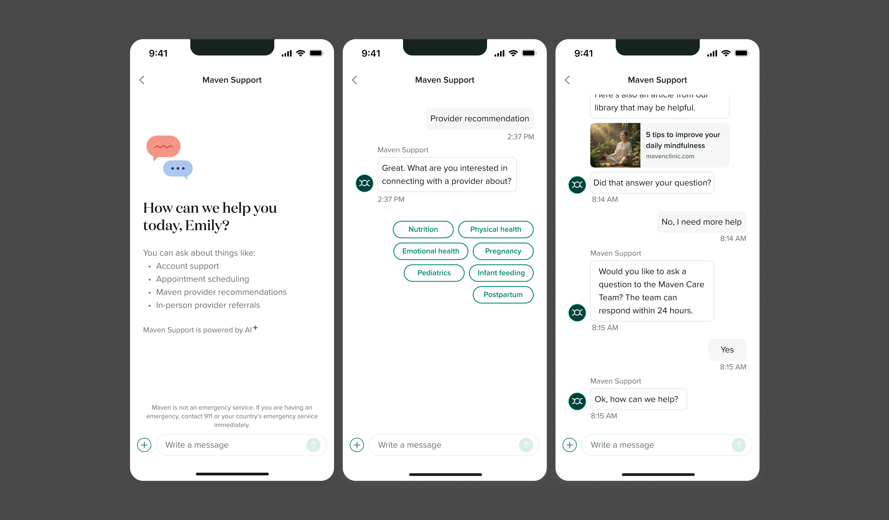

Support Chat
Maven Clinic · 2024–2025

Overview
Maven's first 0→1 AI feature, designed end-to-end across all platforms, from early concept testing through influencing company-wide AI strategy.
Problem
When this project kicked off, every support question, no matter how routine, followed the same path for all users. A user would open the app and message their assigned Care Advocate…then wait.
This was the case for topics of all kinds, ranging from complex medical and financial questions, to basic needs like appointment booking and provider recommendations.
Behind the scenes, a ticket was formed in Zendesk. The 24/7 Support team triaged it, tagged it, escalated it or self-assigned it, and drafted a reply using macros. Eventually the answer reached the user through the same original Care Advocate message thread, but from someone else entirely, and anywhere from within the hour up to three business days later.
At the same time, users were expressing the desire to be able to get information for themself more; not everything warranted a back and forth chat with a Care Advocate, they just had a quick question.
The volume made the math unforgiving. Support fielded at least 300,000 tickets a year, and rising. There was no self-serve path. No deflection. Every interaction depended on a human being available to pick it up. That drove up cost to serve and slowed response times across the board, even for the easy cases.
Maven had no existing model for how AI should handle a conversation this trust-sensitive, at this scale. But it was clear this was the highest-impact opportunity to leverage new technology.
Process
I led a cross-functional working group (Support, Engineering, Product, Clinical), where I tested early concepts against real scenarios before committing to a direction.
From there I presented a 3-year north star vision to leadership. I then brought that vision back to what was buildable with our current design system, mapping which questions AI could resolve end-to-end versus which needed to route straight to a human based on topic.
In parallel, engineering was evaluating the build approach (3rd party vs custom internal build). I designed critical pieces of the flow to visualize the tradeoffs across the different options under consideration, work that fed directly into the vendor decision.
Two Parallel Threads
Two other threads ran alongside the core AI chat interface flow, each with its own design complexity.
Mental model & discoverability
The app was already full of entry points telling users to message their Care Advocate. Each one routed people past the new self-serve path and back into the ticket queue. Established users were already so used to following the existing path to get any question answered.
I had to unravel how we would surface Support Chat in the app, infuse lightweight, evergreen product education, and convert them to use it—even while the original Care Advocate thread was technically still accessible.
The harder part was positioning this within a brand that prides itself on the human touch: promoting the new AI-first support in a way that didn't read as a downgrade from the human care members expected.
Inbox mechanics
The Care Advocate thread that users historically asked support questions in had always been a single conversation thread, alongside 1:1 messages with providers, with an inbox that functioned like text message inboxes. Adding an AI support chat into that same paradigm made things much messier.
Through a process of iteration, user testing and collecting feedback, I was able to land an MVP design that matched both user expectations and business priorities.
The hardest parts were making AI-to-human handoff legible within a single thread, and defining what 'resolved' even means when AI, not a person, is the one closing the conversation.
Working across my two primary flows (“I have a question AI can solve” and “I have a question that needs human attention”) I built out prototypes that helped me fine tune the end-to-end experience within the overall messaging framework.
Look and feel
Most of the interface leaned on Maven's existing design system, extended where needed for new cases like sender distinction and AI-to-human handoff.
Getting there wasn't a single pass. Entry points alone went through several rounds of exploration, from subtle inline prompts to more prominent standalone entry cards, before landing on something that converted without feeling forced on users who didn't need it.
The inbox itself took even more iteration, since every version had to be tested against how it would actually feel once human messages and numerous new threads with Support Chat were sitting in the same inbox.
Landing the right tone mattered as much as the visual work, so I consulted Brand and Copy to sanity-check voice and visual direction along the way. The feature was built simultaneously across mobile and web, so I designed both in parallel from the start.
Development
I brought engineering into the design process early and often. That wasn't just walking them through visual plans, it went both ways: understanding how chat storage, keyword detection, and the AI model itself actually worked shaped decisions I made on the design side, and their callouts on feasibility shaped what I was willing to negotiate on and what I held firm on.
I stayed close to quality after handoff too. I tested the tool myself with my Product Manager, asking it real questions and evaluating whether the answers were actually correct, not just whether the UI rendered right.
We also stood up a Slack channel for internal dogfooding, where Mavens could try the feature on their own accounts and flag both bugs and any answer that didn't match what they'd expect from the AI.
I maintained an organized, annotated Figma file throughout as the project's source of truth, which engineering used directly as the build blueprint. Before release, I planned and led a 20-person Tigers, Paper Tigers, and Elephants pre-mortem to surface risks the team hadn't said out loud yet.
Constraints
This was a 0→1 build inside an already-established product, not a greenfield one. Escalation logic for sensitive financial and medical questions needed to be solid, since getting it wrong had real consequences for members.
Support and human-provider messaging had to be reconciled without confusing the user about who they were actually talking to. And Zendesk didn't disappear: tickets still existed, so I had to design the user-facing experience to account for that underlying system.
The visual direction had its own challenges. An AI agent arguably needed to look and feel distinct from the rest of the product, but the brand wasn't ready to commit to that distinction yet, so the MVP had to read as new without reading as a departure.
This was also a high-visibility project. Executive leadership was following it, operations stakeholders were involved throughout, a large engineering team was building it, it shipped across three platforms at once, and the data running through it was sensitive. That added a level of scrutiny to most decisions.
Post-MVP
Scaling Support Chat meant that I continued to design more niche handoff flows, handling specific questions like fertility treatment costs without losing conversation context, and refining discoverability through contextual entry points across the app. UI and visual fine-tuning continued alongside all of it.
As the effort evolved into its next phase under the new broader “Maven Intelligence”, with Support Chat rebranded as Assistant, I moved on to a new team but continued to be involved as the PD subject matter expert, supporting the designers who took over that space.
Entry-point screens, AI-handled vs. handoff-to-human flow comparison, inbox states
Outcome
The team shipped a limited internal release first to validate AI-handled and human-handoff logic before full rollout. In 2025, Support Chat shipped to all users in production with 91% deflection across 12,000+ questions in the first four months.